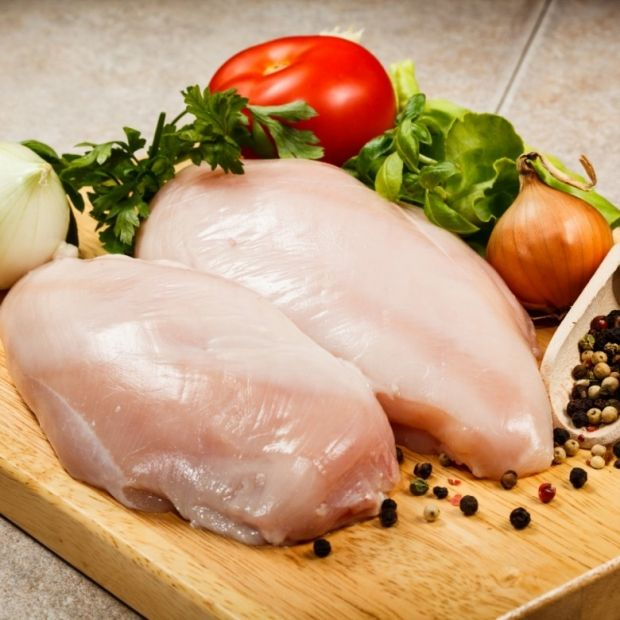
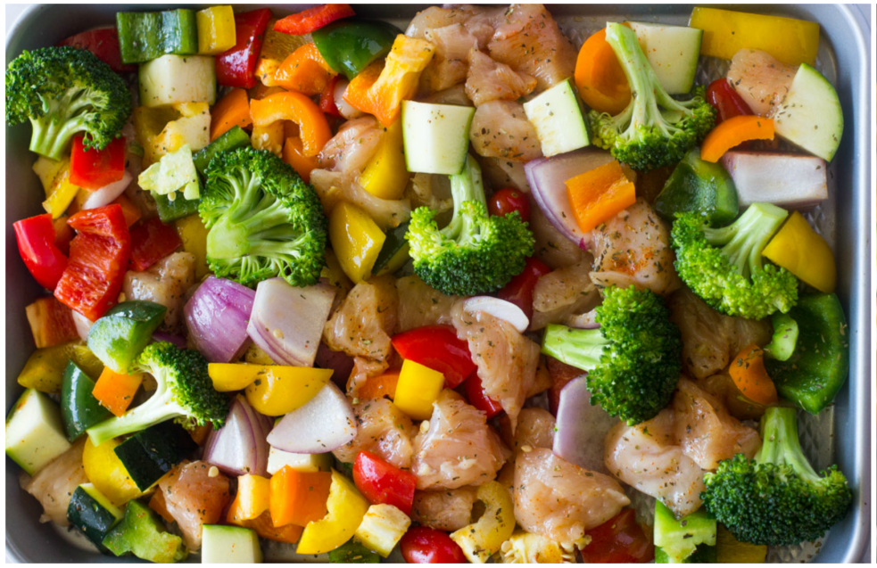
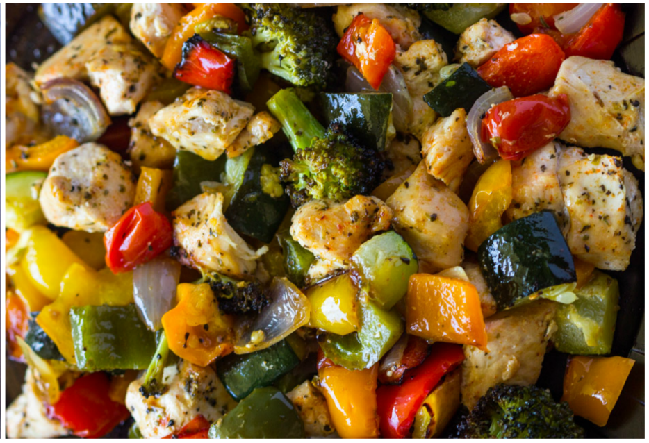
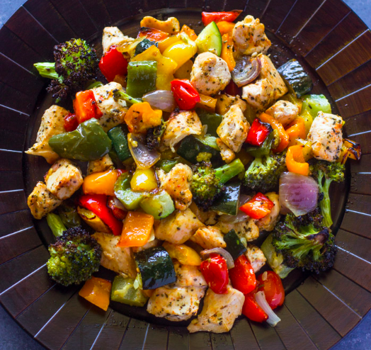

|

Ingredients: 2 medium chicken breasts, 1 cup bell pepper, 1/2 onion, 1 zucchini, 1 cup broccoli florets 1/2 cup tomatoes, 2 tablespoons olive oil, salt, black pepper, 1 teaspoon italian seasoning |
|

Chop all the veggies and chicken into large pieces. Place all in a medium roasting dish or sheet pan. Add the olive oil, salt and pepper, italian seasoning, and paprika. Toss to combine. |
|

Bake for 15 minutes or until the veggies are charred and chicken is cooked. |
|

Enjoy with rice, pasta, or a salad. |